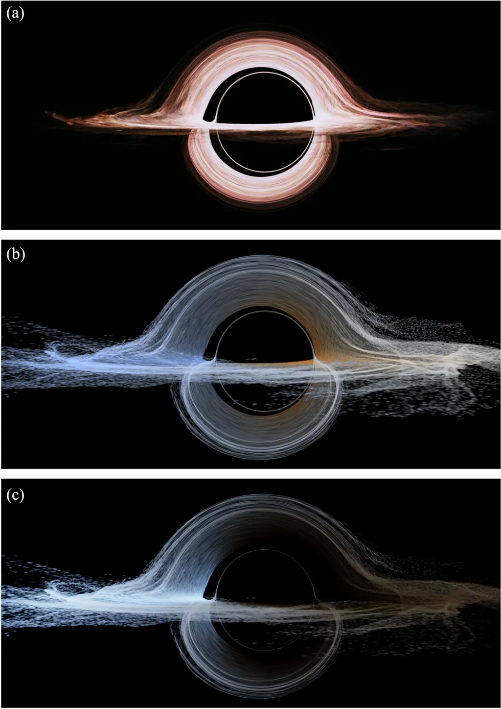
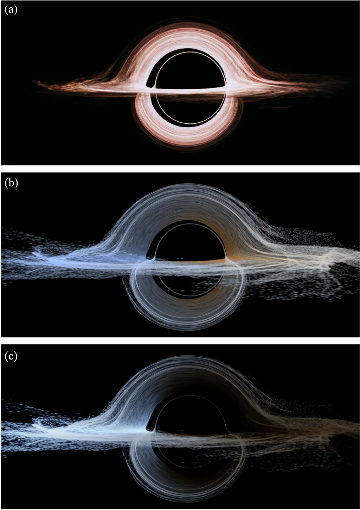

BURACO NEGRO (Gargantua)
Christopher Nolan, o diretor e co-roteirista de Interestelar, e Paul Franklin, o supervisor de efeitos visuais, estavam comprometidos em tornar o filme o mais cientificamente preciso possível. Essa versão realmente foi produzida, mas não chegou às telas.
No buraco negro do filme, o anel brilhante de matéria sendo puxado ao redor do buraco negro foi criado em um estágio mais inicial e apresenta um design muito simétrico e tons avermelhados.
A cor da luz para o observador também mudou, devido ao chamado efeito Doppler (quando um comprimento de onda da luz muda em relação ao observador porque a fonte está se movendo). Nolan não gostou do resultado, pois achou que a assimetria poderia confundir o público.
Houve ainda outra alteração: os efeitos de difração da luz produzidos por uma câmera. Como o público de cinema está acostumado a ver cenas que foram realmente filmadas por câmeras de verdade, os efeitos visuais também devem dar essa sensação para não “quebrar” a continuidade.
Assim, Nolan pediu que a simulação incluísse efeitos que simulassem os reflexos de lentes (lens flares) das câmeras IMAX. No total, foram gerados quase 800 TB de dados. Para simular o fundo estrelado, foram usados o catálogo de estrelas Tycho-2 da Agência Espacial Europeia (ESA) contendo cerca de 2,5 milhões de estrelas.
 

"O amor é a única coisa que transcende o tempo e o espaço."